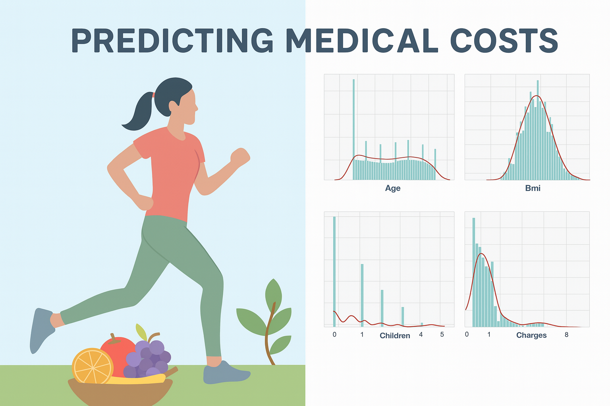
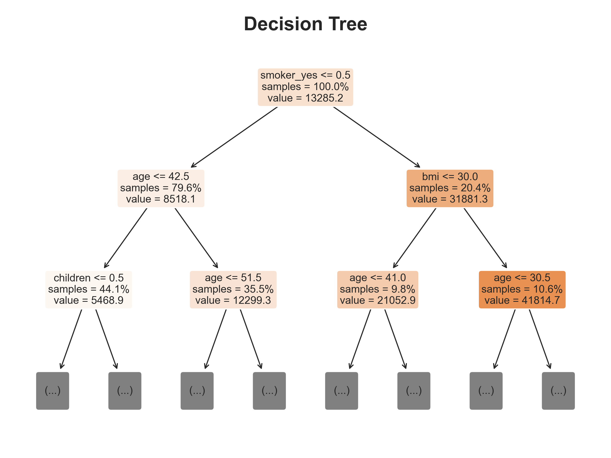
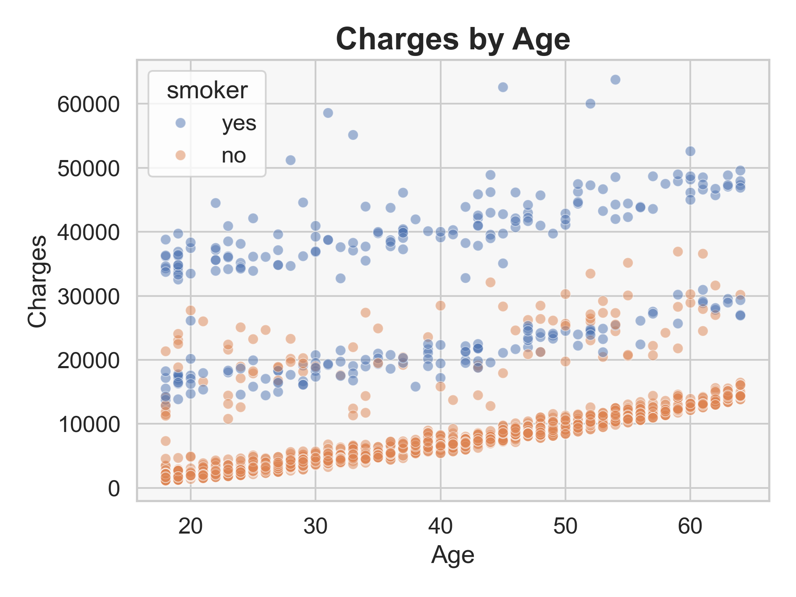
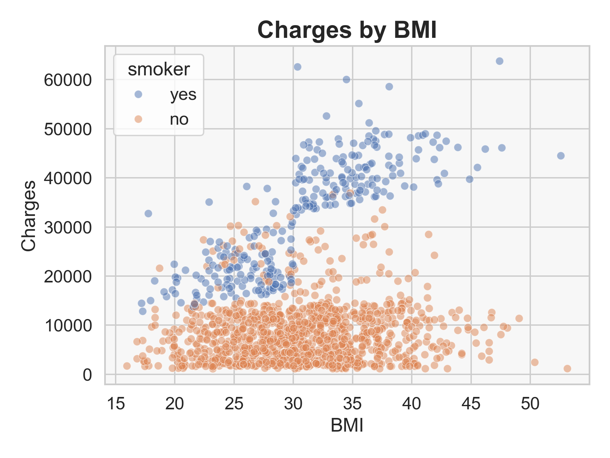
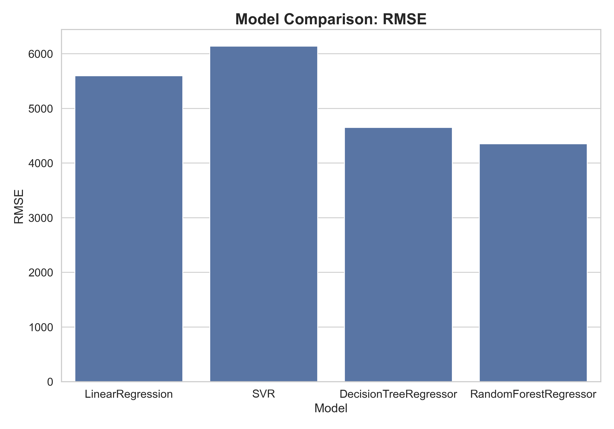

| Models | MAE | MSE | RMSE | R2 | |
|---|---|---|---|---|---|
| 0 | LinearRegression | 4092.36 | 31333268.50 | 5597.61 | 0.79 |
| 1 | SVR | 3373.30 | 37706594.68 | 6140.57 | 0.75 |
| 2 | DecisionTreeRegressor | 2755.59 | 21655894.86 | 4653.59 | 0.86 |
| 3 | RandomForestRegressor | 2459.69 | 18958974.55 | 4354.19 | 0.88 |
Predicting Medical Costs - A Regression Problem
Regression
Medicine

Introduction
1. Key Results
- Charges generally rise with age.
- Smokers consistently have higher and more variable charges than non-smokers.

2. Why It Matters
Predicting medical costs isn’t just a math problem — it’s about understanding the real price of our health choices. For insurers, these predictions guide fairer pricing and risk assessment. For individuals, they reveal how habits like smoking or maintaining a healthy BMI can shape future expenses. In a world where healthcare costs can make or break financial stability, this kind of model helps turn data into smarter, more informed decisions.
3. The Data
The dataset comes from the Medical Cost Personal Dataset on Kaggle, containing 1,338 observations, each representing a single U.S. health insurance policyholder. Key features include age, sex, BMI, number of children, smoker status, and region. The target variable, charges, captures each person’s annual medical cost, ranging from about $1,000 to over $60,000. Despite its small size, the dataset offers rich insights into how lifestyle and demographics drive healthcare expenses.


Methods & Results
4. What I Did
Explored the medical cost dataset with visuals — distributions, correlations, and feature effects — to link age, BMI, and smoking to charges. Cleaned numeric features with StandardScaler and categorical variables with OneHotEncoder. Trained LinearRegression, SVR, DecisionTreeRegressor, and RandomForestRegressor, tuning hyperparameters with RandomizedSearchCV. Evaluated MAE, MSE, RMSE, and R² on the test set and compared models visually.
5. What I Found
Insurance charges tend to increase with age. Smokers have significantly higher and more variable charges compared to non-smokers, whose costs show a smoother, more consistent trend.
Among smokers, insurance charges generally increase with higher BMI, while BMI has little impact on costs for non-smokers. Within non-smokers, age drives costs.
Feature importance analysis (from the tree-based models) highlighted smoking, age, and BMI as the top predictors — confirming both domain expectations and model consistency.
The Random Forest Regressor achieved the best results, with the lowest RMSE (≈ 4354) and highest R² (≈ 0.88), indicating strong predictive accuracy and generalization on unseen data, showing that it is possible to predict medical costs based on key personal and lifestyle factors. This demonstrates that data-driven models can effectively capture the underlying relationships between health behaviors and medical expenses, enabling more accurate cost forecasting and better-informed healthcare and policy decisions.





Conclusion
6. What I Learned
Model performance improved with complexity:
Tree-based models, especially Random Forest, captured the nonlinear impact of health and lifestyle factors most effectively. The findings align with real-world intuition — smokers and older individuals face substantially higher insurance costs.
7. What’s Next
This project shows that predicting medical costs is possible — but there’s room to grow. Future work could explore more advanced models like Gradient Boosting or XGBoost to see if they capture even subtler patterns in the data. Another direction is adding richer features to improve model depth and realism. Finally, scaling this work to larger, more diverse datasets would help assess how well these findings hold up across different populations. The next steps are open — it’s up to you to take this foundation and push it further.
Credits
Thanks for Reading the Post!
Inspired by Chapter 2 from Hands-On Machine Learning with Scikit-Learn, Keras, and TensorFlow, 3rd Edition by Aurélien Géron